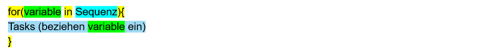

Woche 8
“Loops”/for-Schleifen
Lernziele
In den letzten Wochen haben wir verschiedene Funktionen kennengelernt, um Daten zu bereinigen, zu plausibilisieren und aufzubereiten. Zudem haben wir insbesondere die Funktionen zur Erstellung von Grafiken angewendet, um erste interessante Ergebnisse zu generieren. In dieser Woche schauen wir uns an, in welchen Fällen for-Schleifen.
Konkret:
- Sie erläutern, wozu und in welchen Fällen for-Schleifen nützlich sind.
- Sie erklären, wie eine for-Schleife funktioniert.
- Sie erstellen einfache for-Schleifen.
Aufgaben
Importantfor-Schleifen
Operationen, die mehrfach ausgeführt werden sollen, können mit for-Schleifen oder Funktionen erfasst werden.
Good Practice:
- for-Schleifen nur verwenden, wenn keine Alternativen möglich sind, denn sie sind vergleichsweise langsam. Wenn immer möglich ist Vektorisierung oder
apply()vorzuziehen. - Wenn Sie for-Schleifen verwenden, packen Sie so wenige “Tasks” wie möglich in die Schleife. Denn “Tasks” in der Schleife werden bei jedem Durchgang ausgeführt!
Aufgabe 1: summary-Output mit for-Schleif nachbauen
Bauen Sie den summary-Output der numerischen Variablen mit einer for-Schleife nach. Orientieren Sie sich am untenstehenden Aufbau einer For-Schleife.
Hinweis: Bilden Sie einen Vektor mit den numerischen Variablen, die bearbeitet werden sollen und verwenden Sie diesen Vektor für den for-Loop (in der Initiierung, d.h. in den runden Klammern, und auch im Rumpf, d.h. in den geschweiften Klammern).
v.num <- c("agea", "yrbrn", "eduyrs", "wkhtot")
Beispiel, wie dieser Vektor im Loop-Rumpf verwendet wird: min(d.ch.k[, v.num[i]])
Alle Outputs fügen Sie mit z.B. rbind() und/oder paste() zusammen und speichern das als Objekt im Rumpf. Objekte, die in einem Loop generiert werden, werden standardmässig nicht rausgeschrieben, sondern «verschwinden» nach Abbruch des Loops. Deshalb braucht es als letzte Funktion im Rumpf noch print(hier der Name Ihres Objekts).
Aufgabe 2: Code lesen
Beschreiben Sie, was untenstehender Code macht und inwiefern diese for-Schleife sinnvoller ist als jene, die Sie in Aufgabe 1 gebaut haben. (Kommentieren Sie den Code aus.) Hinweis: kmeans(mca1$ind$coord[, c("Dim 1", "Dim 2")], i)$withinss ruft die Within-Clustervarianz von i Clustern auf, die mit der Funktion kmeans() von Koordinaten (mca1$ind$coord[, c("Dim 1", "Dim 2")]) gebildet wurden.
wss <- rep(0, 18)
for(i in 1:17){
wss[i] <- sum(kmeans(mca1$ind$coord[, c("Dim 1", "Dim 2")], i)$withinss)
}
plot(1:18, wss, type = "b", xlab = "", ylab = "")Aufgabe 3: eigenes Beispiel
Entwickeln Sie einen eigenen Loop, der für die Plausibilisierung und Aufbereitung hilfreich ist.
Reflexion (bitte betiteln Sie diesen Abschnitt auch mit “Reflexion” in Ihrem Markdown-Dokument!)
Bitte reflektieren Sie und halten stichpunktartig fest:
- Was ist Ihnen klar geworden?
- Wo sind Sie noch unsicher? Was hat noch nicht geklappt?
Lösungen
source(file = "C:/Users/BisangL/Documents/c_fuer_quarto/skripts/datenaufbereitung_ess11.R")Aufgabe 1: summary-Output mit for-Schleife nachbauen
summary(d.ch.k) # min, 1., 2. Quartil, mean, 3. Quartil, max psu stratum anweight agea yrbrn
Min. :2766 Min. :199.0 Min. :0.4329 Min. :15.00 Min. :1933
1st Qu.:3112 1st Qu.:200.0 1st Qu.:0.4584 1st Qu.:35.00 1st Qu.:1958
Median :3458 Median :201.0 Median :0.5290 Median :49.00 Median :1974
Mean :3458 Mean :201.2 Mean :0.5411 Mean :50.11 Mean :2007
3rd Qu.:3803 3rd Qu.:203.0 3rd Qu.:0.6080 3rd Qu.:65.00 3rd Qu.:1988
Max. :4149 Max. :205.0 Max. :0.9164 Max. :90.00 Max. :7777
NAs :30 NAs :22
ipbhprpa fineqpy edlvdch eduyrs
very_much :189 strongly_in_favour :387 app :398 Min. : 0.00
yes :494 somewhat_in_favour :471 secI :134 1st Qu.: 9.00
somewhat :345 neither_nor :276 pu_ba :113 Median :10.00
little :145 somewhat_in_against:185 u_ma :112 Mean :11.85
not :161 strongly_in_against: 40 pu_ma : 73 3rd Qu.:14.00
not_at_all: 33 NAs : 25 (Other):549 Max. :38.00
NAs : 17 NAs : 5 NAs :5
mnactic wkhtot hinctnta polintr trstprl
paid_w :812 Min. : 0.00 dec_6 :176 very :259 trust7 :299
ret :343 1st Qu.:26.00 dec_4 :157 quite :519 trust8 :299
edu : 80 Median :42.00 dec_5 :130 hardly:433 trust6 :203
house : 77 Mean :36.13 dec_8 :122 not :173 trust5 :198
look_job: 23 3rd Qu.:45.00 dec_7 :119 trust9 : 96
(Other) : 47 Max. :90.00 (Other):481 (Other):231
NAs : 2 NAs :113 NAs :199 NAs : 58
ppltrst stfdem gndr uemp3m pdwrk netusoft
Min. : 0.000 sat_8 :388 m:697 yes: 306 no :524 never : 65
1st Qu.: 5.000 sat_9 :261 w:687 no :1072 yes:860 occ : 61
Median : 6.000 sat_7 :257 NAs: 6 few_times: 42
Mean : 5.844 sat_10 :141 most_days: 102
3rd Qu.: 7.000 sat_6 :115 everyday :1114
Max. :10.000 (Other):179
NAs :3 NAs : 43
nwspol fineqpy_zf edlvdch_zf stfdem_num
Min. : 0.00 in_favour :858 prim: 24 Min. : 0.000
1st Qu.: 30.00 neither_nor:276 sek1:134 1st Qu.: 7.000
Median : 45.00 against :225 sek2:770 Median : 8.000
Mean : 60.93 NAs : 25 tert:451 Mean : 7.526
3rd Qu.: 60.00 NAs : 5 3rd Qu.: 9.000
Max. :1127.00 Max. :10.000
NAs :2 NAs :43
netusoft_zf
never : 65
sometimes: 205
everyday :1114
v.num <- c("agea", "yrbrn", "eduyrs", "wkhtot") # Variablen, die bearbeitet werden sollen
# die Gewichtungsvariablen wurden für W7, Aufg. 5 aufgenommen und werden hier nicht berücksichtigtDie Funktion gibt für jede Variable eine Zusammenfassung aus. Sie berechnet für jede metrische Variable den Mittelwert, sowie die Lage- und Streuungsmasse. Wir starten mit den “Tasks” und bauen Schritt für Schritt eine Schleife auf:
mean(d.ch.k$agea, na.rm = T) # das müssen wir mit dem indizierten Vektor v.num schreiben[1] 50.11448i <- 1 # dazu setzen wir erstmal i auf 1
mean(d.ch.k[, v.num[i]], na.rm = T) # funktioniert[1] 50.11448# wir versuchen es noch für einen zweiten Output
max(d.ch.k[, v.num[i]], na.rm = T) # funktioniert[1] 90# und verbinden die Outputs zu einer Tabelle...
rbind(paste("mean", mean(d.ch.k[, v.num[i]], na.rm = T)),
paste("max", max(d.ch.k[, v.num[i]], na.rm = T))) # funktioniert [,1]
[1,] "mean 50.1144756277696"
[2,] "max 90" # dasselbe dann für die anderen Outputs...
# min, 1., 2. Quartil, mean, 3. Quartil, max
for (i in 1:length(v.num)) {
t.sum <- rbind(
paste("Variable", v.num[i]),
paste("min", min(d.ch.k[, v.num[i]], na.rm = T)),
paste("1. Quartil", quantile(d.ch.k[, v.num[i]], probs = 0.25, na.rm = T)),
paste("Median", quantile(d.ch.k[, v.num[i]], probs = 0.5, na.rm = T)),
paste("mean", round(mean(d.ch.k[, v.num[i]], na.rm = T), 2)),
paste("3. Quartil", quantile(d.ch.k[, v.num[i]], probs = 0.75, na.rm = T)),
paste("max", max(d.ch.k[, v.num[i]], na.rm = T))
)
print(t.sum)
} [,1]
[1,] "Variable agea"
[2,] "min 15"
[3,] "1. Quartil 35"
[4,] "Median 49"
[5,] "mean 50.11"
[6,] "3. Quartil 65"
[7,] "max 90"
[,1]
[1,] "Variable yrbrn"
[2,] "min 1933"
[3,] "1. Quartil 1958"
[4,] "Median 1974"
[5,] "mean 2006.98"
[6,] "3. Quartil 1988"
[7,] "max 7777"
[,1]
[1,] "Variable eduyrs"
[2,] "min 0"
[3,] "1. Quartil 9"
[4,] "Median 10"
[5,] "mean 11.85"
[6,] "3. Quartil 14"
[7,] "max 38"
[,1]
[1,] "Variable wkhtot"
[2,] "min 0"
[3,] "1. Quartil 26"
[4,] "Median 42"
[5,] "mean 36.13"
[6,] "3. Quartil 45"
[7,] "max 90" Aufgabe 2: Code lesen
Die Schleife rechnet für das i-te Cluster die Summe der Within-Clustervarianz. i ist die Variable, die bei jeder Iteration um 1 erhöht wird (Sequenz: 1:17). Die Summen werden danach in einem Plot dargestellt. Dieser Loop ist sinnvoller als die nachgebaute summary-Funktion, weil wir immer die einfachste Lösung bevorzugen. Um eine Zusammenfassung der Daten zu erhalten, ist entsprechend die summary()-Funktion einer selbstgebauten for-Schleife vorzuziehen.
Aufgabe 3: eigenes Beispiel
(individuell)